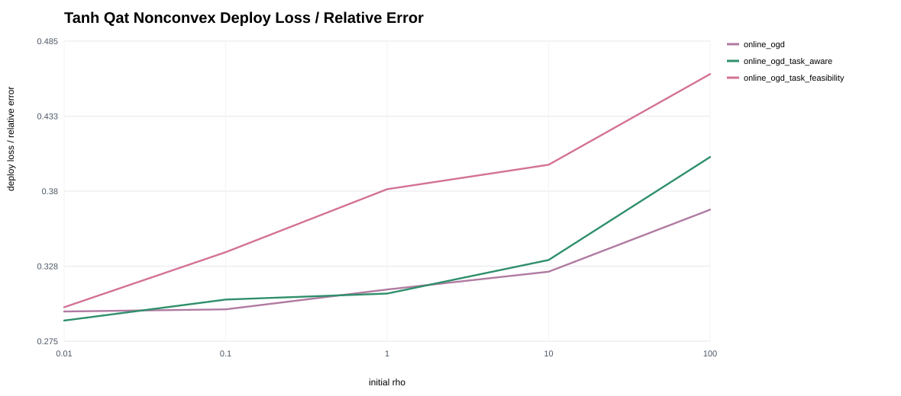
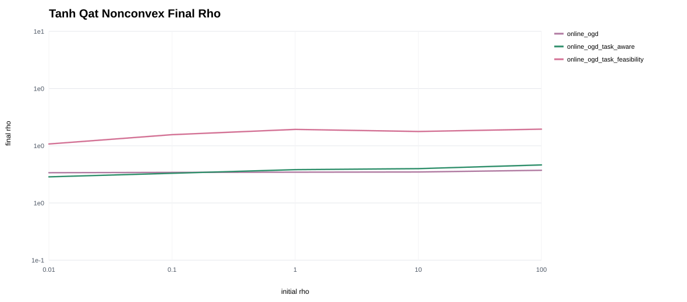
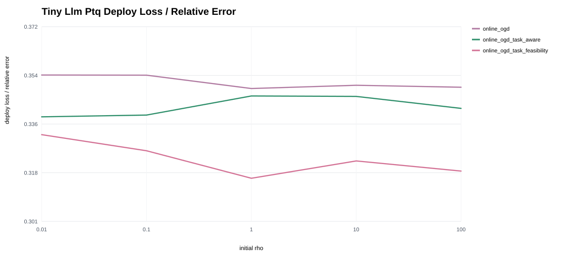
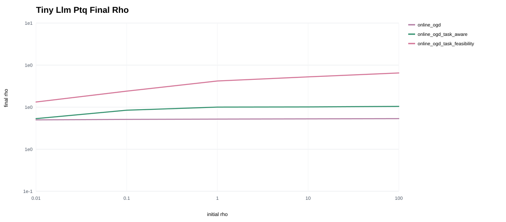
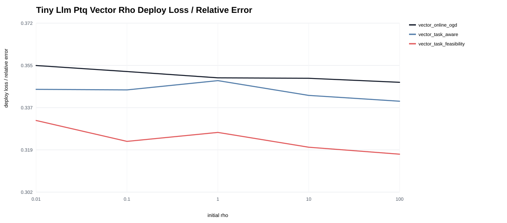
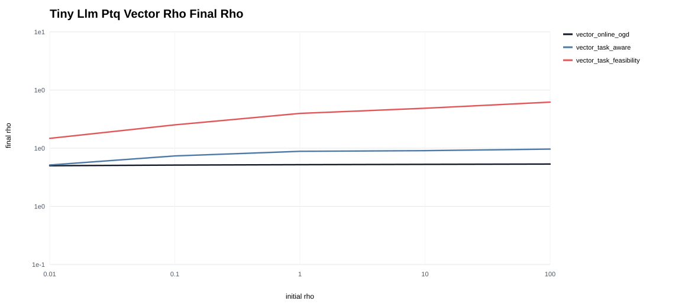

Rho Robustness and Vector-Rho PTQ
Initial-rho sweeps for scalar online penalties and per-block vector-rho variants on synthetic LLM PTQ.
Tanh Qat Nonconvex Task Metric Vs Rho0

Tanh Qat Nonconvex Final Rho Vs Rho0

Tiny Llm Ptq Task Metric Vs Rho0

Tiny Llm Ptq Final Rho Vs Rho0

Tiny Llm Ptq Vector Rho Task Metric Vs Rho0

Tiny Llm Ptq Vector Rho Final Rho Vs Rho0

Robustness Summary
| problem | base_method | mean_task_metric | best_task_metric | worst_task_metric | relative_range | best_rho0 | worst_rho0 |
|---|---|---|---|---|---|---|---|
| tanh_qat_nonconvex | online_ogd | 0.319 | 0.296 | 0.367 | 24.2% | 0.01 | 100 |
| tanh_qat_nonconvex | online_ogd_task_aware | 0.328 | 0.289 | 0.404 | 39.6% | 0.01 | 100 |
| tanh_qat_nonconvex | online_ogd_task_feasibility | 0.376 | 0.299 | 0.462 | 54.8% | 0.01 | 100 |
| tiny_llm_ptq | online_ogd | 0.352 | 0.349 | 0.354 | 1.4% | 1 | 0.01 |
| tiny_llm_ptq | online_ogd_task_aware | 0.343 | 0.339 | 0.347 | 2.3% | 0.01 | 1 |
| tiny_llm_ptq | online_ogd_task_feasibility | 0.323 | 0.316 | 0.332 | 5.1% | 1 | 0.01 |
| tiny_llm_ptq_vector_rho | vector_online_ogd | 0.35 | 0.347 | 0.354 | 2.0% | 100 | 0.01 |
| tiny_llm_ptq_vector_rho | vector_task_aware | 0.344 | 0.34 | 0.348 | 2.5% | 100 | 1 |
| tiny_llm_ptq_vector_rho | vector_task_feasibility | 0.324 | 0.317 | 0.332 | 4.4% | 100 | 0.01 |